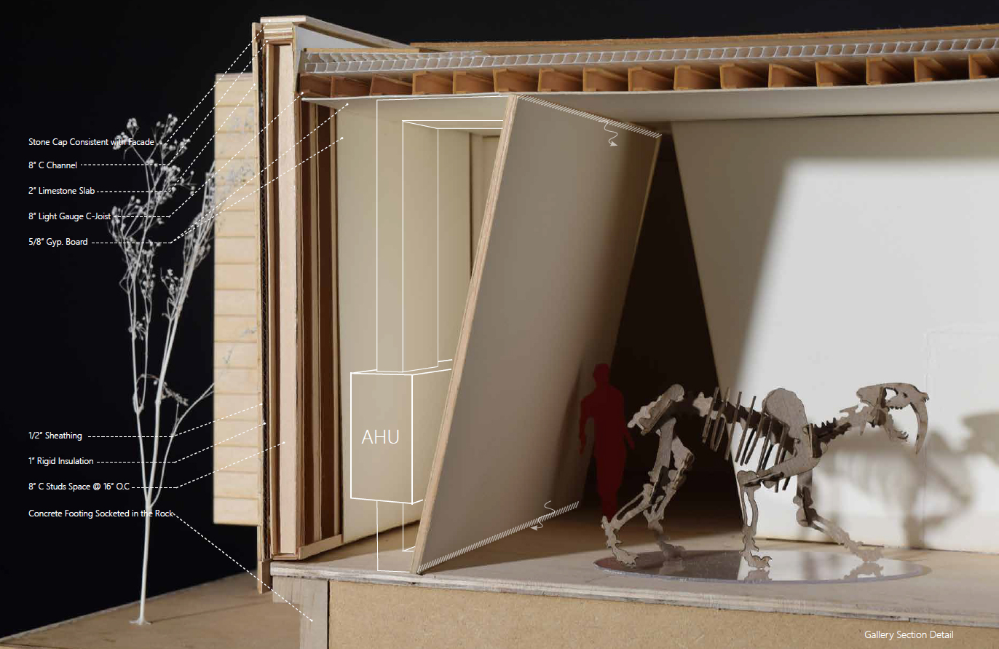

Site Location
Friesenhahn Cave, San Antonio, Texas
Date
Category
Academic
Instructor
Murray Legge
Partner
Daiyiqing Qin
Friesenhahn Cave is a fossil-rich singel-room size cave located west suburban of San Antonio. The floor of the cave is covered with the wealth of bones and fossils. The most famous remains found in it are those of Homotherium who lived in the cave more than 15,000 years ago.
The project addresses conservation, education, and research, which divides programs into two parts: Public Museum and Private Research Institute. The museum, a series of shifting box, stands for stratum which disassembling the fossils into each layer---the gallery. It also resembles a cave entity.
From the main entrance, visitors can only see some floating "solid" boxes with no idea of what these are. Once people get inside, the tilted walls reveal a new space and light coming through from each corner and varying through the day without telling the secrets - the hidden skylights
The visit experience is a loop. Visitors first arrive at the reception and go through each gallery with a bridge, which forms a view corridor towards the cave. Then exit at the institute to see staff working and walk on the path beside cave to finish the loop.


The Private buildings follow the same logic but designed with a single shell structure to maximize the functionality for research staff.